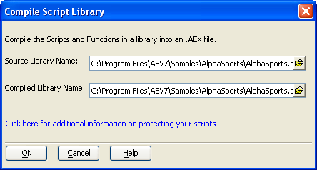
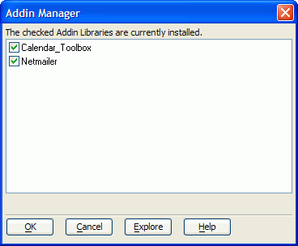

Compiling Scripts and Functions
Alpha Five lets you compile your scripts and functions into a Compiled Script Library. The Compiled Script Library is a file with an .AEX extension.
 Note : You can encrypt
your scripts by placing compiler instructions in their source code. See
OPTION ENCRYPTED_TOKENS.
Note : You can encrypt
your scripts by placing compiler instructions in their source code. See
OPTION ENCRYPTED_TOKENS.
Compiling Your Scripts into a Library (AEX) File
To compile the scripts and functions that are stored in a library (an ALB file).
Display the Control Panel.
Display the Code tab.
Make sure no scripts are selected. Select Code > Compile Scripts and Functions into an AEX file.
Optionally, modify the Source Library Name and Compiled Library Name fields.
Click OK.

Why would you want to compile your scripts and functions into an AEX file?
Compiling scripts and functions into an AEX file is primarily of interest to developers who have developed libraries of scripts and functions that they want use with a lot of different databases, or who have scripts and functions that they want to protect, so that no one can see their source code. In addition, code in a compiled library will execute slightly faster.
There are three ways in which you might use AEX files:
Auto-Load Compiled Library
When you open a database, Alpha Five checks to see if there is a file with the same name as the database, with an AEX extension. If so, Alpha Five loads the AEX file when the database is opened. You can prevent the auto-load library from loading in the View > Settings dialog box, under Preferences > Auto-Load Library. The following example shows how you might use the Auto-Load Compiled Library.
You have developed an application called MyApp (the database is called MyApp.adb ). You are now ready to distribute your application to your customers, but you want to make sure that they cannot see any of the source code for your application.
You compile all of the scripts and functions in your application (the scripts and functions are stored in MyApp.alb ) into a Compiled Library called MyAppAEX. Make sure that you save MyAppAEX in the same folder as MyApp.adb.
Next, you backup your original copy of MyApp (this is VERY important). Alternatively, you can select Code > Export > Scripts, then save your scripts in a text file that can be re-imported.
Then, you delete all of the scripts and functions shown in the Code tab of the Control Panel. Do not delete operations.
Next, you close the MyApp database, and then re-open it.
When Alpha Five re-opens MyApp.adb, it will auto-load MyAppAEX, and all of the scripts and functions in your compiled library will be available. However, your customers will not see any scripts and functions in the Control Panel.
Attached Compiled Libraries
Select the File > Database Properties command. The Database Properties dialog box has a tab called Compiled Libraries. You can specify the names of any AEX files that you want to load when the database is loaded. You do not need to include the auto-load library in this list.
Addins
An Addin is just an AEX file that has been placed in a special folder in your Alpha Five program folder - the addins_installed folder. The scripts and functions in an Addin are globally available in Alpha Five, regardless of the database that is currently loaded, or whether a database is loaded. In effect, an Addin is part of Alpha Five, and is indistinguishable from the built-in Alpha Five functions.
 Note : Much of the
functionality of Alpha Five V5 was developed as Addins. Now,
you can create your own Addins.
Note : Much of the
functionality of Alpha Five V5 was developed as Addins. Now,
you can create your own Addins.
The Tools > Addin Manager command displays the Addin Manager dialog box.

When an Addin is unloaded, the AEX file is moved from the Addins_installed folder to the Addins_disabled folder.
The Explore button shows you what scripts and functions are in each Addin library.
See Also
LOAD_LIBRARY(), Variable Data Types and Scope, Using Addin Variables to Create a Multi-Database Application, Remove script source from a database, A5_Compile_Scripts()